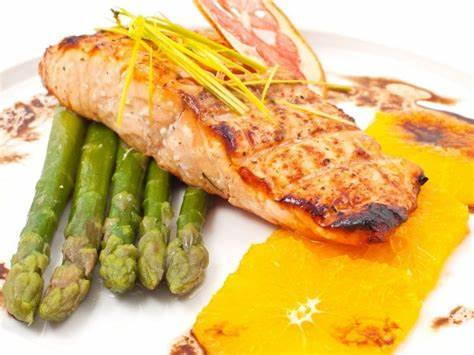

Receta Nro 2 :
Salmon a la parrilla con esparragos y batata al horno
Ingredientes:
2 filetes de salmon
1 manojo de esparragos
1 batata (camote)
Aceite de oliva
Jugo de ½ limon
Sal, pimienta y ajo en polvo al gusto
Instrucciones:
Precalienta el horno a 200C (400F). Lava la batata, pelala (opcional) y cortala en rodajas. Coloca las rodajas en una bandeja para hornear, rocialas con aceite de oliva, sal y pimienta. Hornea durante 25-30 minutos o hasta que estén doradas.
Mientras, lava los esparragos y corta las puntas duras. Rocia con aceite de oliva, sal y pimienta. Asalos en una sarten durante 8-10 minutos.
Para el salmon, calienta una sarten a fuego medio-alto. Sazona el pescado con sal, pimienta y ajo en polvo. Asa el salmon por cada lado unos 3-4 minutos, hasta que este dorado por fuera pero jugoso por dentro.
Sirve el salmon con los esparragos asados y la batata horneada.
